Dense Tiling Meets Structured Sparsity
Scalable Algorithms for High-Performance Computing
Esmail Abdul Fattah
esmail.abdulfattah@kaust.edu.sa
King Abdullah University of Science and Technology (KAUST)
Hatem Ltaief, Håvard Rue, David E. Keyes
SIAM Conference on Parallel Processing for Scientific Computing (PP26)
Why This Matters
Bayesian Inference at Scale
Major global institutions rely on Bayesian methods that generate structured sparse matrices requiring efficient factorization.
WHO [1]
Excess mortality estimation
CDC [2]
Teen birth rates analysis
UN [3]
World Population Prospects
Climate [4]
Interpolating climate variables
The Bottleneck
All these applications use INLA (Integrated Nested Laplace Approximations) which requires:
- Cholesky factorization - hundreds of times
- Selected inversion - posterior marginals
- Structured matrices - e.g., arrowhead, banded
Key insight: As data resolution increases, these matrices grow larger and denser, becoming the computational bottleneck.
[1] WHO. Methods for estimating excess mortality associated with COVID-19 pandemic. World Health Data Platform, 2022.
[2] CDC. County-level teen birth rates in the United States. National Center for Health Statistics, 2024.
[3] UN DESA. World Population Prospects 2024: Methodology of population estimates. UN DESA/POP/2024, 2024.
[4] Fioravanti et al. Interpolating climate variables using INLA and SPDE. Environmetrics, 2023.
INLA: Global Impact
INLA enables fast Bayesian inference for latent Gaussian models, powering research in epidemiology, ecology, climate science, public health, and beyond.
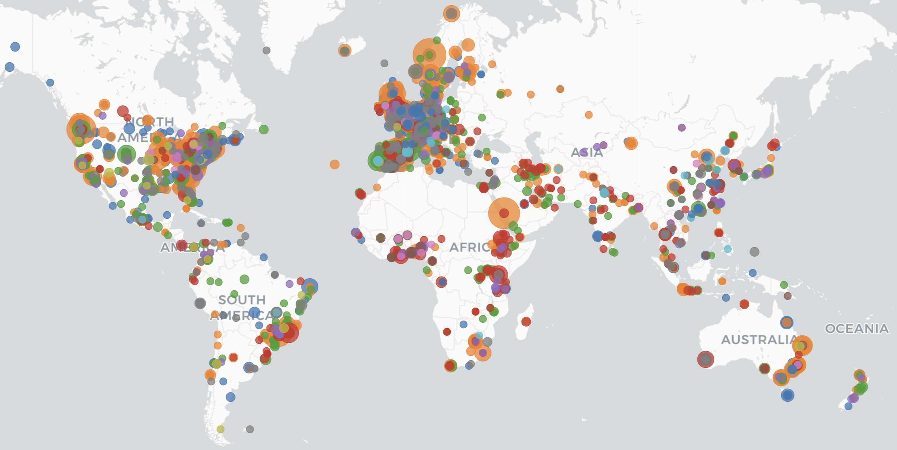
Source: r-inla.org
The Computational Challenge
INLA generates diverse structured sparse matrices from Kronecker products of spatial, temporal, and other model components.
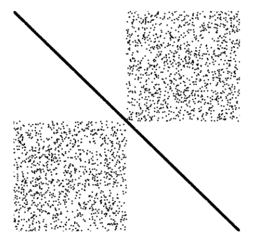
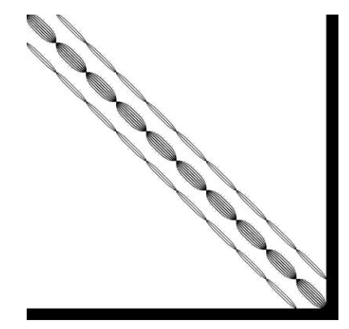
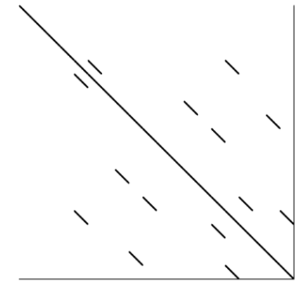
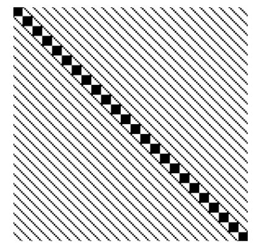
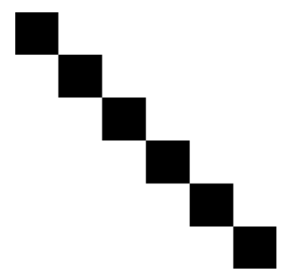
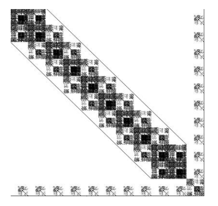
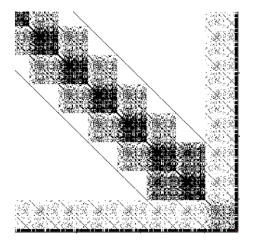
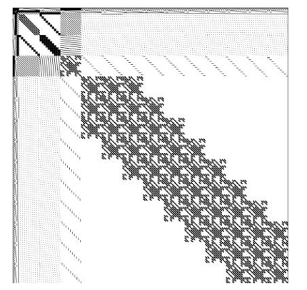
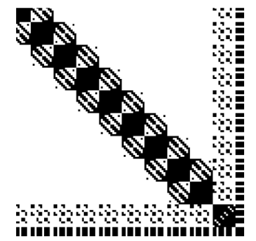
Sparse Solvers
- Low arithmetic intensity
- Poor cache utilization
- Irregular memory access
Dense Solvers
- O(n³) complexity
- Ignores sparsity pattern
- Wastes memory on zeros
Neither approach is optimal! We need the efficiency of sparse + the performance of dense.
The sTiles Approach
sTiles = Hybrid framework combining sparse techniques (ordering, skip zeros) with dense performance (LAPACK/BLAS-3 on tiles)
Why Tiles?
Inspired by PLASMA dense linear algebra library:
- Uniform grid of fixed-size dense blocks
- Regular data structures for predictable dependencies
- High arithmetic intensity via LAPACK/BLAS-3: POTRF, TRSM, SYRK, GEMM
- Fine-grained parallelism via tile independence
- Static scheduling maximizes data locality
Sparse Techniques
Preserve sparsity through preprocessing:
- Permutation (RCM, AMD, ND) to minimize fill-in
- Symbolic factorization to identify nonzero tiles
- Skip zero tiles entirely during computation
- Operate only on dense nonzero tile clusters
Sparse Points
Dense Tiles
LAPACK/BLAS-3
Skip zero tiles
44 / 100
tiles computed
Buttari et al. A class of parallel tiled linear algebra algorithms for multicore architectures. Parallel Computing, 2009.
The Fill-in Challenge
During Cholesky factorization, empty tiles can become non-empty due to GEMM updates
Aij
Aij
non-empty
non-empty
FILL-IN!
now filled
non-empty
non-empty
Aij
Aij
cols 1-2
cols 3-4
No fill-in!
still empty
cols 1-2
cols 3-4
Not accounting for this creates many unnecessary fill-in tiles! Proper ordering keeps empty tiles empty.
The Memory Trade-off
When we tile, we allocate full dense storage for every non-zero tile, even if it's sparse inside!
Sparse Tile (diagonal)
4 elements
16 allocated!
Dense Tile (full)
16 elements
16 allocated ✓
Same memory cost!
Sparse tile (4 elements) uses same storage as dense tile (16 elements)
Worth it?
Yes, if tile is dense enough! For diagonal tiles, we use customized kernels or smaller tile sizes
CPU Tile Size
~120
L2/L3 cache efficiency
GPU Tile Size
~600
maximize occupancy
Ordering Strategies
Permutation is critical: it determines fill-in, parallelism, and whether we preserve structure
Available Orderings
- RCM - Reduces bandwidth
- AMD, COLAMD, CAMD - Minimize fill-in (SuiteSparse)
- ND - Graph partitioning (METIS)
Flexible Combinations
- Auto-select: run strategies in parallel, choose best for application
- Tile-level ordering: order the tiles themselves
- Hierarchical:
global ND (METIS) + different local ordering per partition (e.g., RCM on P₁, AMD on P₂)
METIS Limitation
ND (METIS) creates independent partitions, but not always optimal:
- Often creates imbalanced partitions
- Uneven task distribution between partitions
- Load imbalance hurts parallel efficiency
Our Approach
- Adapted ND: balance partition sizes
- Custom orderings: structure-aware strategies
- Hybrid: combine best of each method
Ordering Strategies
Nested Dissection creates independent partitions, but uniform tiling breaks this independence
Nested Dissection
With Uniform Tiling
Tiles crossing partition boundaries create dependencies between independent subproblems
Tree Reduction
Exposing parallelism in left-looking Cholesky for arrowhead matrices
The Problem: Sequential Bottleneck
In left-looking Cholesky, many GEMMs update the same target tile sequentially:
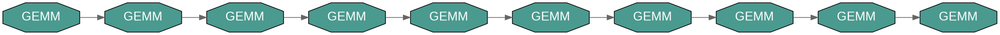
GEMM → GEMM → GEMM → ... (serial dependency)
The Solution: Tree Reduction
Run GEMMs in parallel to temporary tiles, then combine with tree-based GEADD:
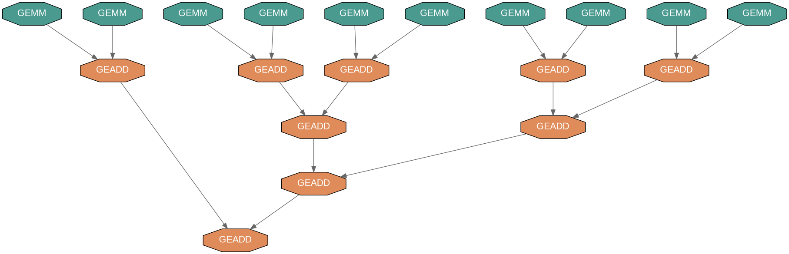
DAG Comparison: Dense vs Arrowhead
6×6 Tiles
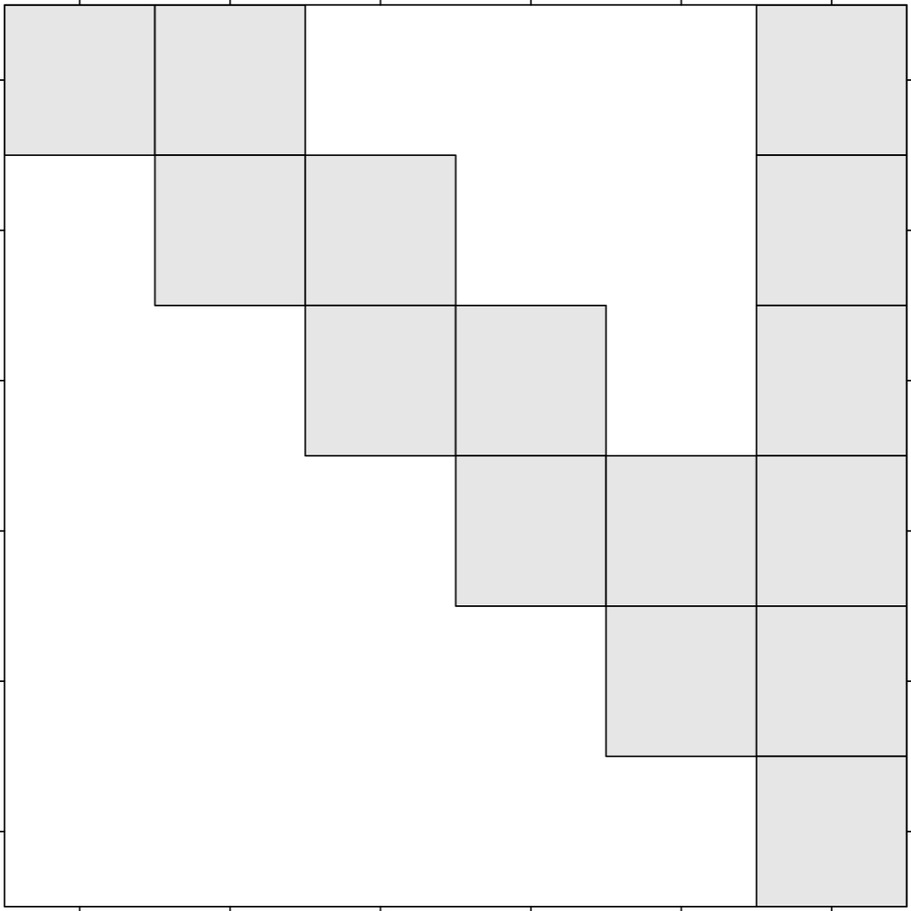
Arrowhead structure
Dense Matrix
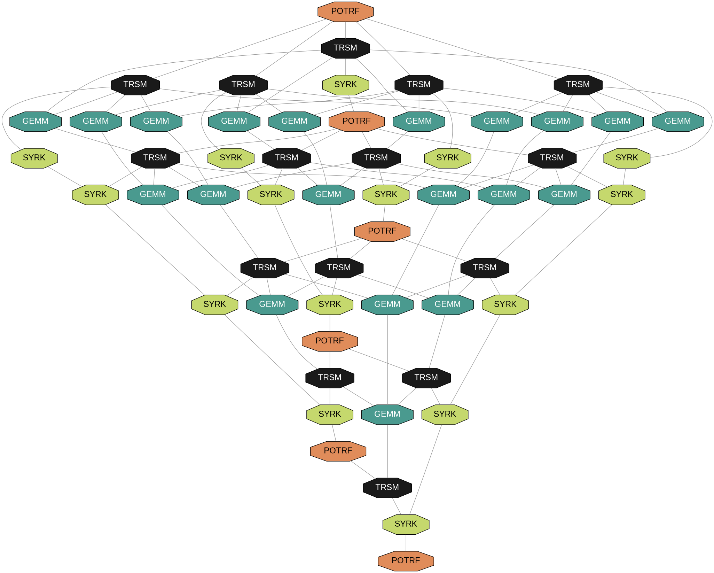
Wide DAG = High parallelism
Arrowhead DAG
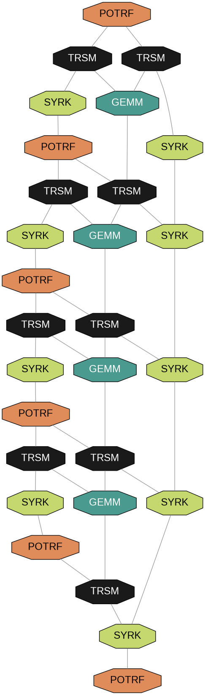
Thin DAG = Limited parallelism
Tree reduction recovers parallelism in the thin arrowhead DAG
sTiles Pipeline
1 Preprocessing
Multi Ordering
RCM, AMD, Adaptable ND
Symbolic Factorization
Fill-in analysis
Tiling (CTSF)
Compressed Tile Storage
Static Scheduling
Each core's tasks saved
Run in parallel: same pattern, different values
2 Cholesky Factorization
Tasks Saved
From preprocessing
Tile Kernels
POTRF, TRSM, SYRK, GEMM
Tree Reduction
Parallel GEMMs + GEADDs
GPU Acceleration
cuBLAS / cuSOLVER
3 Solve
Tasks Saved
From preprocessing
Forward
Ly = b
Backward
Lᵀx = y
Solution x
Ax = b
4 Selected Inversion
Tasks Saved
From preprocessing
Selection
Sparsity + fill-in (auto)
Two-Phase Numeric
Row-wise + accumulation
(A⁻¹)ᵢⱼ
On sparsity pattern
Test Matrix Characteristics
18 arrowhead matrices from INLA framework covering diverse sizes and structures
| Parameter | Range | Meaning |
|---|---|---|
| Matrix Size (n) | 10K → 1M | Number of rows/columns |
| Bandwidth (b) | 100 → 15K | Width of banded region |
| Arrow Thickness (t) | 10 → 200 | Dense columns at end |
| Density | 0.02% → 4% | Fraction of nonzeros |
Matrix Groups
Group 1-2
10K-100K
Group 3
500K
GPU Tests
50K-1M
Arrowhead Structure
Why this matters
Sparse enough to skip zeros, dense enough to use BLAS
Test Hardware
Intel Xeon Gold 6230R (52 cores, 2.1 GHz)
AMD EPYC 7713 (128 cores, 1.5 GHz)
NVIDIA A100 (80GB HBM2)
Performance: Cholesky Factorization
Comparison vs state-of-the-art sparse solvers across 18 test matrices (52 cores)
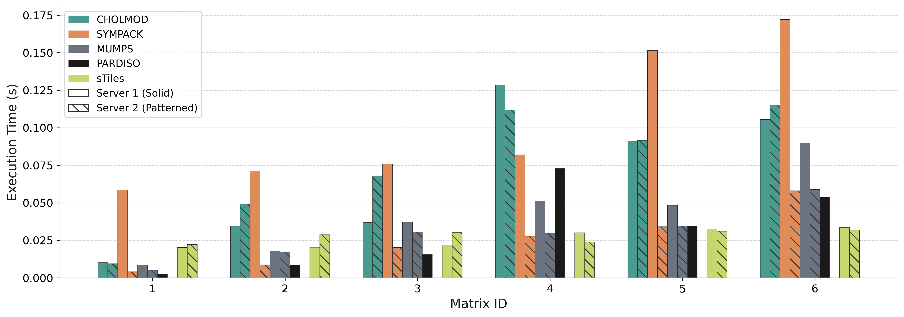
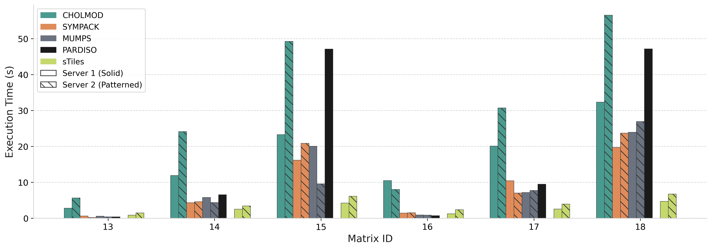
vs PARDISO
11.08×
vs SymPACK
9.34×
vs CHOLMOD
8.41×
vs MUMPS
5.07×
Gap grows with matrix size
Libraries: CHOLMOD [Chen et al., ACM TOMS 2008], SymPACK [Jacquelin et al., SC 2016], MUMPS [Amestoy et al., 2001], PARDISO [Schenk & Gärtner, 2004]
Performance: Tree Reduction
Parallel GEMM accumulation: speedup from tree reduction vs sequential
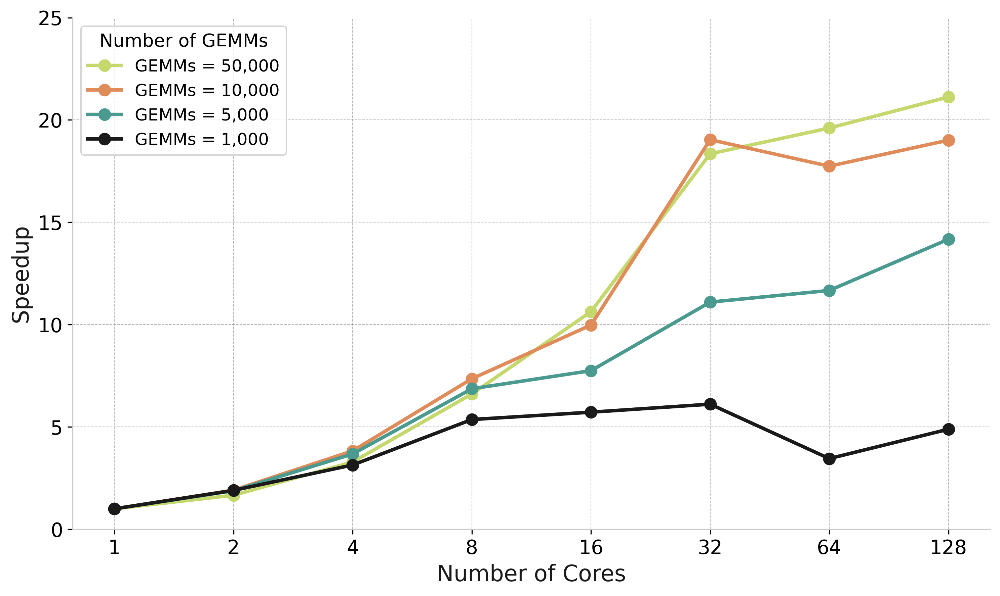
The Problem
Left-looking Cholesky: many GEMMs update same target tile sequentially
Tree Reduction Solution
Parallel GEMMs to temporary tiles → Tree-based GEADD accumulation → Final update
Speedup up to
5× at 16-32 cores
50K
GEMMs benefit most
log₂(n)
Reduction depth
Performance: Core Scaling
Strong scaling: Matrix 15 (n=500K, b=3000) from 1 to 52 cores
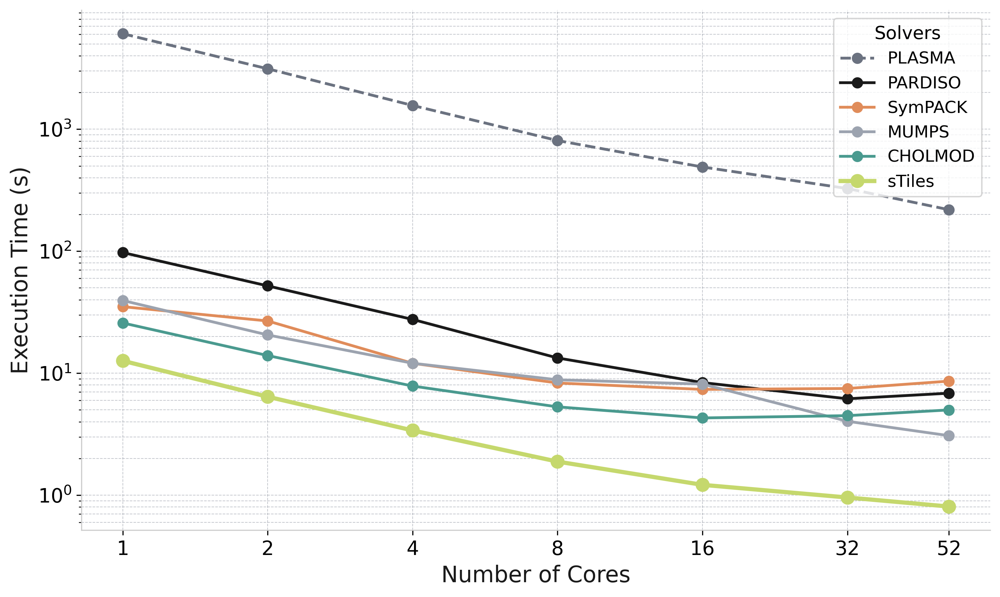
sTiles (lime)
Fastest at all core counts. 0.8s at 52 cores vs 12.6s at 1 core (15.6× speedup)
Sparse Solvers
CHOLMOD, SymPACK, MUMPS, PARDISO: 3.8× to 10.7× slower than sTiles at 52 cores
PLASMA (dashed)
Dense baseline: treats full matrix. 271× slower than sTiles at 52 cores
sTiles exploits structure:
Sparse storage + Dense BLAS kernels
Selected Inversion
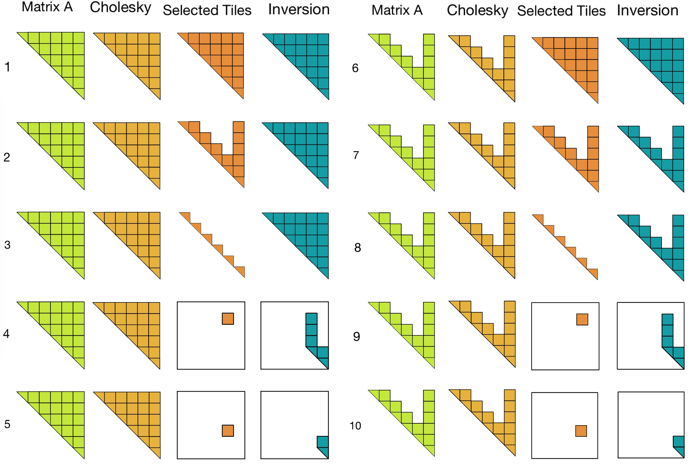
More details on this in my talk at:
Friday, March 6 — CP12 — 11:15–11:35 AM — Room T9 SR 055
GPU-Accelerated Parallel Selected Inversion for Structured Matrices
Esmail Abdul Fattah, Hatem Ltaief, Haavard Rue, David E. Keyes — KAUST
Performance: Selected Inversion
sTiles vs PARDISO for selected inversion on 500K matrices (computing (A⁻¹)ᵢⱼ on sparsity pattern)
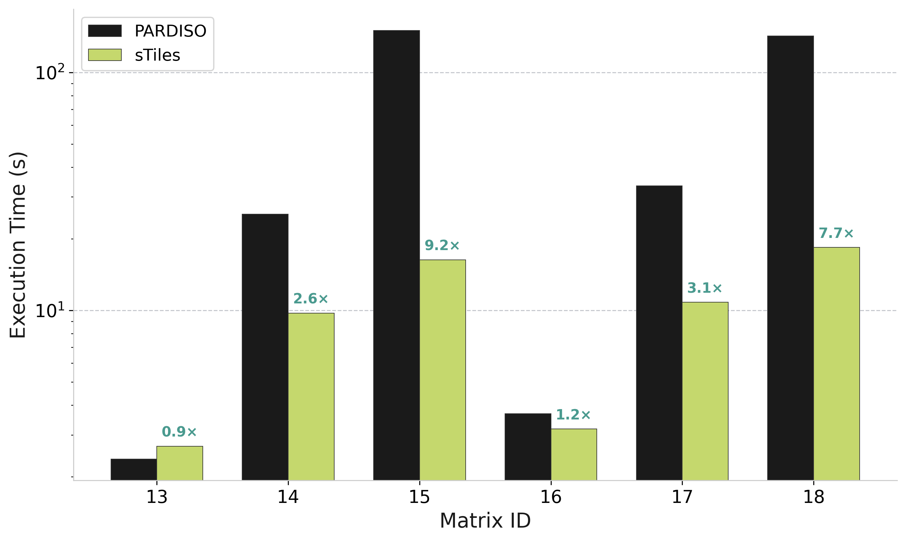
Max Speedup vs PARDISO
9.2×
Matrix 15 (n=500K, b=3000)
High Bandwidth Matrices
IDs 14, 15, 17, 18: 2.6× to 9.2× faster than PARDISO
Low Bandwidth Matrices
IDs 13, 16: Similar performance (sparse overhead dominates)
Why sTiles Wins
Tile-based approach with static scheduling eliminates dynamic overhead at scale
Reference: PARDISO Selected Inversion [Schenk et al., SIAM SISC 2007]
Selected Inversion: Density Effect
How inverse time scales with matrix density (100K matrices, varying bandwidth)
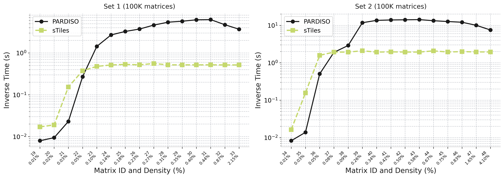
sTiles (lime)
Flat scaling - time stays constant as density increases
PARDISO (black)
Growing cost - time increases with density up to 12× slower
Why sTiles stays flat:
Fixed tile size → predictable BLAS workload
12×
Max speedup (Set 1)
7.4×
Max speedup (Set 2)
GPU Acceleration
NVIDIA A100 (80GB) vs 64 AMD EPYC 7713 cores | GPU tile size: 600, CPU tile size: 120
Cholesky Factorization
Matrix: n=50K, b=15K
CPU (64 cores)
3.68s
4.7×
speedup
GPU (16 streams)
0.79s
Matrix: n=1M, b=3K
CPU (32 cores)
15.95s
2.8×
speedup
GPU (32 streams)
5.75s
Selected Inversion
Matrix: n=50K, b=15K
CPU (64 cores)
20.38s
5.72×
speedup
GPU (32 streams)
3.56s
Including data transfer overhead
Tile Size Trade-off
GPU (600): Maximize kernel throughput
CPU (120): Maximize task parallelism
Hardware: NVIDIA A100-SXM4 (80GB HBM2) | AMD EPYC 7713 (64 cores, 1.99 GHz)
Dense Matrix: sTiles vs PLASMA
Full matrix inversion comparison | Matrix: n=10,200 (dense) | Static vs Dynamic scheduling
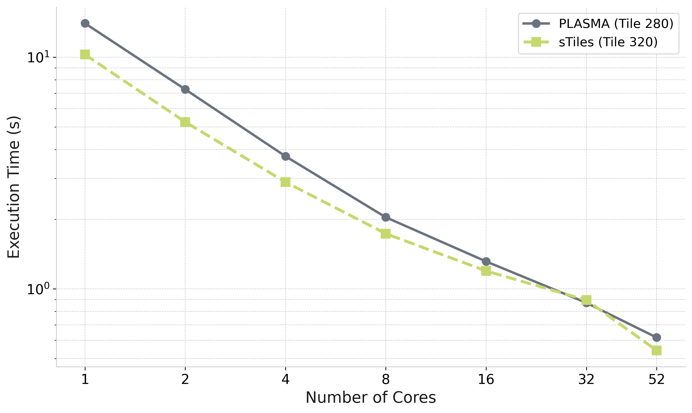
sTiles at 52 cores
1.14×
faster than PLASMA
Static Scheduling Wins
sTiles faster at 1-16 cores and 52 cores due to lower overhead
PLASMA (Dynamic)
Marginal advantage only at 32 cores; scalability degrades at high core counts
Key Insight
sTiles approach works well even for fully dense matrices, not just sparse
PLASMA: Parallel Linear Algebra Software for Multicore Architectures [Agullo et al., 2009]
Publications & Future Work
sTiles: An Accelerated Computational Framework for Sparse Factorizations of Structured Matrices
E. Abdul Fattah, H. Ltaief, H. Rue, D. Keyes
GPU-Accelerated Parallel Selected Inversion for Structured Matrices
E. Abdul Fattah, H. Ltaief, H. Rue, D. Keyes
Elevating INLA: Next-Level Speed with sTiles
Application-focused: Demonstrating INLA acceleration
Roadmap
Structure
Arrowhead → Any pattern
Tiles
Dense only → + Sparse
Ordering
Basic → Multiple
Scale
Single GPU → Multi-GPU
Memory
Shared → Distributed
Summary & Impact
Performance Results
Cholesky Factorization
vs CHOLMOD / SymPACK / MUMPS / PARDISO
11×
max speedup
Selected Inversion
vs PARDISO on 500K matrices
13.5×
max speedup
GPU Acceleration
A100 vs 64-core AMD EPYC
5.7×
GPU speedup
Key Contributions
Dense Tiling for Structured Sparsity
Best of dense (parallelism) + sparse (efficiency)
Static Scheduling + Tree Reduction
Maximize locality, expose parallelism in thin DAGs
Hybrid CPU-GPU Implementation
Adaptive tile sizing for each architecture
Real-World Applications
INLA for Bayesian inference: COVID mortality, climate modeling, population forecasting
Core Message: Treating structured sparsity as dense tiles unlocks massive parallelism and order-of-magnitude speedups for large-scale Bayesian inference.
Thank You!
Questions & Discussion
Esmail Abdul Fattah
King Abdullah University of Science and Technology (KAUST)